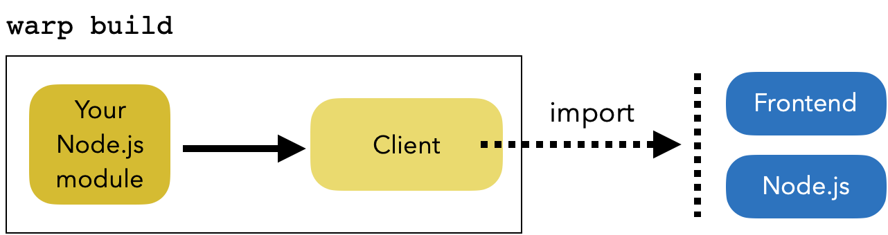
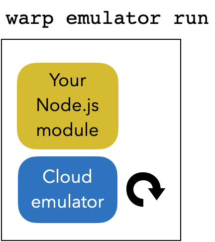
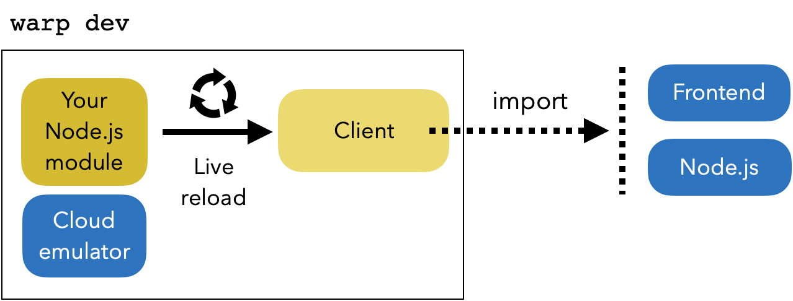
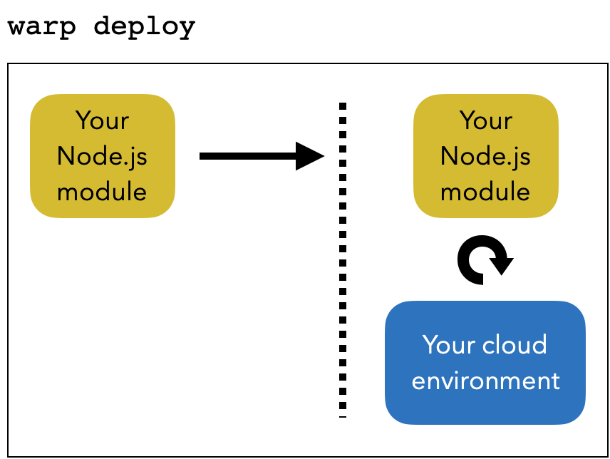

Developer workflow
Our SDK provides a set of commands to create and develop your managed Node.js module.
There are 4 main commands: warp build, warp emulator, warp dev, and warp deploy.
warp build prepares your Node.js module to be emulated or deployed and generates the client you can import in your browser or from a Node.js script/module to call your managed module. The client provides a transparent access to your Node.js module exported functions over http.

After being built, warp emulator run starts a module emulation so you can run the module on your computer to test or use it locally.

Note that using
warp buildandwarp emulatorcommands you can create the CI workflow you need to test your modules before deployment.
To enter a development session with live reload use warp dev that builds and starts an emulator, and at each change of your module code it rebuilds the client and updates the emulator.

When you're ready to deploy, build your module and use warp deploy to deploy your module on a cloud execution environment. You can also deploy your static assets.
Static assets and your modules are deployed in two HTTP servers.

Note that using
warp buildandwarp deploycommands you can create the CD workflow you need to deploy your modules.
To get all other available commands you can use warp help. Please refer to the command line documentation for details and supported options.
We also provide documentation on how to call a module from